Обзор рынка коммерческой недвижимости 2020 год
Индикаторы рынка офисы
Общее предложение — 679 тыс. кв.м.
Уровень вакантности — 9,3%
Ставка аренды* в классе, А — 1 431 м²/мес.
В классе В+ — 888 м²/мес.
в классе В — 748 м²/мес.
Общее
Из них сертифицировано РГУД — 44
*Здесь и далее ставка аренды указана включая НДС и OPEX
Предложение
Общий объём предложения качественных офисов составил более 679 тыс. кв. м и представлен 131
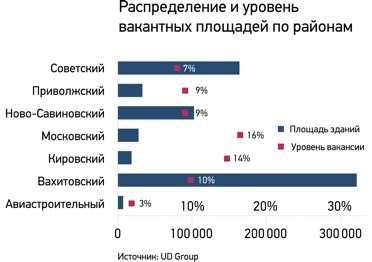
В 2020 году предложение увеличилось на 1 бизнес- центр — «71 Квартал», расположенный на ул. Адоратского, 2б, с арендопригодной площадью 2,3 тыс. кв.м.
Уровень вакансии, который увеличился в период пандемии до 14,3%, к концу 2020 года по
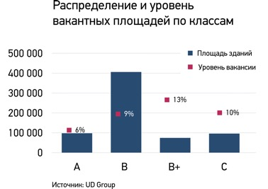
Тенденция по районам аналогична, практически все районы восстановили уровень загрузки офисов. Повышение уровня вакансии отмечено в Ново — Савиновском районе (9%, обуславливается открытием объекта), а также в Московском районе в бизнес — центре касса С (10%).
Многие строящиеся проекты, которые должны были ввестись в эксплуатацию в 2020 году, были отложены до восстановления ситуации на рынке. Этот год был отмечен началом строительства лишь одного
Коммерческие условия
Во многих
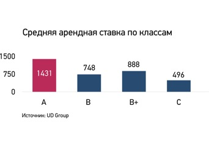
Рост средней арендной ставки в 2020 году относительно 2019 года составил 4,3%.
Средневзвешенная ставка на вакантные площади в
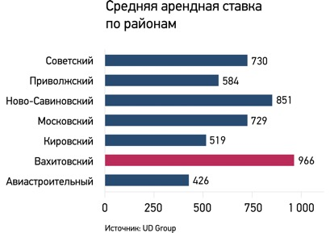
Офисная недвижимость — наименее пострадавший сегмент, показатели которого восстановились уже в этом году.
Индикаторы рынка Торговая недвижимость
Общее предложение качественных ТЦ (площадью более 30 тыс. кв.м.) — 814,7 тыс. кв.м.
Уровень вакантности — 7,3%
Ставка аренды — 1 669,6 руб. м2/мес. *
Общее
*Ставки указаны исходя из опроса ТЦ на предмет поиска помещений 1–2 этаж 200–1000 м.
Здесь и далее ставка аренды указана включая НДС и OPEX
Предложение
В настоящий момент в городе Казань 54 торговых объектов общей площадью более 1 млн. кв.м. (
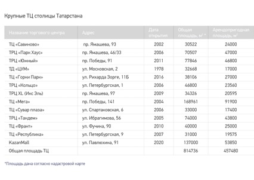
В 2020 году к числу качественных торговых центров (площадью более 30 тыс.кв.) прибавился новый торговый центр KazanMall и общая площадь таких проектов в Казани стала составлять 814,7 тыс. кв.м. общей площадью и 457,4 тыс. кв.м. арендопригодной площади. Показатель обеспеченности торговой площади стал составлять 661,3 кв.м. на 1000 жителей.
В ноябре в Казани открылся
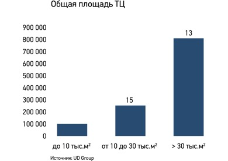
Показатель вакансии на конец 2020 года составил 7,3%, что свидетельствует о возвращении арендаторов к нормальной работе после закрытия ТРЦ на время пандемии.
2020 год для торговых центров Казани был наиболее тяжелым с точки зрения доходности. Локдаун, в который были погружены торговые объекты в период с 28 марта по 15 июля, оставил след на уровне дохода ТРЦ за 2020 года 30 — 40% у каждого собственника.
После открытия торговых центров в июле ожидалось снижение посещаемости ТЦ и, как следствие, уход торговых операторов, но данные прогнозы не сбылись и посещаемость стала восстанавливаться на прежний уровень. В случае, если не произойдет повторения полного закрытия торговых центров, можно надеяться на восстановление отрасли к показателям 2019 года уже в будущем 2021 году.
Уходящий год в торговой недвижимости был отмечен значимыми событиями для крупных объектов (в некоторых ТРЦ произошла смена собственников и управляющих компаний). Был продан ТЦ Castorama. В ТЦ «Сувар плаза», в след за ТРК «Тандем» в 2019 году, сменился собственник, которым стал Ак Барс Банк. ТЦ ЦУМ передали в управление профессиональной УК, которая планирует реконцепцию объекта, включающую в себя создание фудмолла на 2 этаже комплекса.
Текущие арендные ставки
Номинальная средняя ставка аренды на наиболее востребованный формат помещений площадью 100 — 200 кв. м на первом этаже составляет 1 816 руб. за кв. м. (что выше чем в 2019 году на 8%), а на помещения от 500 до 1000 кв.м. 1 135 руб. за кв.м., средняя ставка аренды составила 1 669,6 руб. за кв.м.
Street Retail
Уровень вакантности — 10,7%
Средняя ставка аренды по торговым коридорам — 1 072 руб. м2/мес.
Средняя ставка аренды по городу — 790 руб. м2/мес.
В 2020 году спрос на сегмент Street retail остался на прежнем уровне, пережив снижение ставок аренды в период действия ограничительных мер. При этом к концу года все показатели достигли уровня января 2020 года. В отличие от столичного рынка, Street retail Казани представлен в основном помещениями внутри жилых комплексов и микрорайонов. Расположение привычных магазинов рядом с домом переключил покупательский поток с торговых центров на ближайшие магазины. Показатели в основном снижались в торговых коридорах города, где расположены арендаторы общепита.
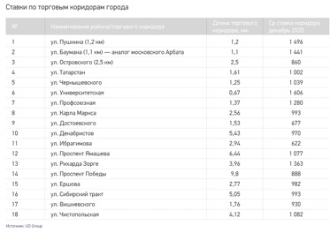
По отношению к декабрю прошлого года, вакансия на рынке street retail к концу первого полугодия увеличилась на 2,5% (с 8,5% до 11%). В сентябре пустующие помещения начали заполняться арендаторами и к концу года уровень вакансии составил 10,7%. Наибольшее влияние коронакризис оказал на ставки в сегменте Street retail. В первом полугодии ставки снизились на 20% по отношению к декабрю 2020 года, но по итогам года средние ставки аренды практически восстановились до уровня прошлого года (-0,6% в сравнении декабрь 2019/2020 года).
Что касается торговых коридоров, уровень вакансии увеличился на улицах Пушкина, Баумана и Чистопольской на 10%, в данных локациях было наибольшее количество арендаторов сферы общепит. Но ставки аренды к концу года не сократились, а наоборот даже увеличились по сравнению с прошлым периодом на 8%.
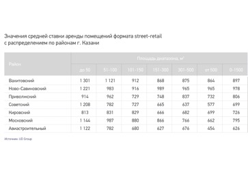
Индикаторы рынка Гостиницы
Общее предложение — 135 гостиниц на 7 703 номера*
*без учета мотелей, ведомственных гостиниц и хостелов
Ср. загрузка номерного фонда — 35%
Ср. ADR отелей за 2020 год — 2 479
Предложение
В 2020 году гостиничный бизнес стал наиболее пострадавшей отраслью из — за ограничений, введенных по причинам пандемии. Загрузка отелей упала на 25%, а в период карантина находилась практически на 0 уровне.

Начиная с 28 марта 2020 года, введенный режим самоизоляции практически парализовал работу гостиниц в связи с отсутствием гостей. Это привело к колоссальным убыткам в сфере гостиничного бизнеса. В июне, после смягчения мер, в гостиницы начали возвращаться клиенты, однако некоторые объекты так и не смогли восстановить свою работу. Во время пандемии в Казани были полностью закрыты 3 гостиницы и 11 хостелов, но 20% гостиниц до сих пор не вернулись на полный номерной фонд.
В 2020 году, не смотря на негативные факторы, отель Kazan by Tasigo открыл вторую очередь номерного фонда на 96 номеров. Напомним, что в 2020 году так же планировалось завершение строительства гостиницы Kazan Expo, инвестором которой является компания Kvart Invest (по оценкам открытых источников стоимость финансирования составляет 1,8 млрд. руб.), сроки завершения проекта были перенесены и о дате открытия нового отеля неизвестно.
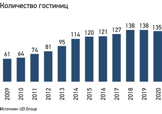
Спрос
Туристический поток в 2020 году снизился в первом полугодии практически в 2 раза. Во время действовавших ограничений (с 28 марта по 15 июня) гостиницы принимали только гостей, имевших командировочные направления, а также обслуживали постояльцев, которые не смогли выехать по причине закрытия границ.
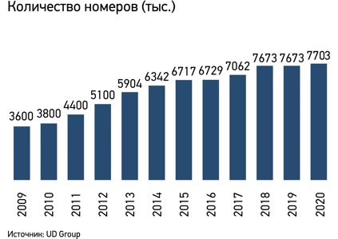
С июля спрос на размещение стал восстанавливаться благодаря мерам поддержки и развития внутреннего туризма в столице Татарстана. Толчком послужили новые внутренние направления авиарейсов, а так же федеральная целевая программа стимулирования внутреннего туризма в Российской Федерации, по которой действует возможность возврата денежных средств за тур по России до 20% (в Татарстане данная программа продлена до января 2021 года).
Но уже потерянные 6 месяцев для гостиничного рынка не помогут восстановить загрузку хотя бы до минимальной рентабельности, которая позволила бы бизнесу работать в 0 (загрузка отеля при таких показателях должна составлять минимум 40%). На конец года средняя загрузка отелей за 2020 год по Казани составила — 35%.
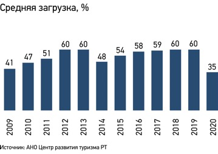
Текущие цены
Средняя стоимость номерного фонда по году значительно снизилась в связи с влиянием негативных факторов и желанием отельеров отбить хоть какие -то расходы. Средний показатель ADR за 2020 год составил 2 479 руб. На новогодние праздники стоимость отелей значительно увеличилась в связи с высоким спросом, вызванным сезонностью и массовыми ограничениями, введёнными на этот период в соседних регионах.
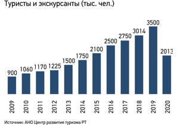
Индикаторы рынка Склады
Общее предложение общедоступных складов- 393 тыс. кв.м.
Общее предложение собственных логоцентров — 156,5 тыс. кв.м.
Уровень вакантности, А, В класса — 3,7%
Ставка аренды в классе, А* — 383,5 м²/мес.
в классе В* — 284,7 м²/мес.
*Здесь и далее ставка аренды указана включая НДС и OPEX
Общий объём предложения общедоступных складских комплексов составляет более 393 тыс. кв.м. В 2020 году объем собственных логоцентров вырос и составил 156,5 тыс. кв.м.
В 2020 году были введены в эксплуатацию практически все заявленные проекты вблизи Казани и по РТ. Среди них: распределительные центры магазина Пятерочка в г. Зеленодольск (
Вакансия логоцентров класса, А и В составляет 3,7%, что ниже уровня прошлого года на 4%, а в складах класса С — примерно 15% вакантных площадей. В Казани не появляется новых складских комплексов из — за отсутствия достаточного спроса арендаторов на готовые площади. Уровень логистических центров наиболее высокий по России.
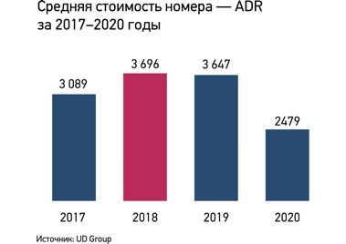
Ставки по складам класса, А — от 383,9 руб./кв. м (потеря -2,3% к прошлому году) и класса В — 284,7 руб./кв. м. (рост ставок к предыдущему году составил 3,6%). Большинство складских проектов соответствует классу В, поэтому при высоком спаде стоимости аренды на класс, А, снижение в сегменте составило -0,3%.
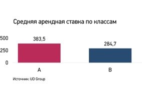
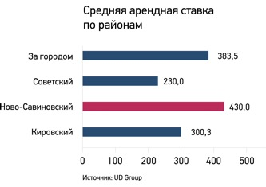
Инвестиции
Ставки капитализации выше уровня 2019 года,
- офисный сегмент: 9,8–11% (9,5–10% 2019)
- торговый сегмент: 10–11% (9,75–10,25% 2019)
- складской сегмент: 10–13% (11,5–12% 2019)
В 2020 году прошло несколько крупных сделок по смене собственника в крупных объектах: реализован ТРК «Ривьера», ТЦ «Castoramа».
Как и в жилой недвижимости, в период с июля по октябрь 2020 года был отмечен высокий спрос на её приобретение. В след за этим выросла и стоимость квадратного метра. Но, в отличие от квартир, инвесторы коммерческих объектов рассчитывают стоимость метра исходя из ставок капитализации, а небольшое снижение и стагнация стоимости аренды не вызывала высокого интереса покупателей и стоимость квадратного метра вернулась к привычным ставкам.
Объекты более 3,5 тыс. кв.м., выставленные на продажу
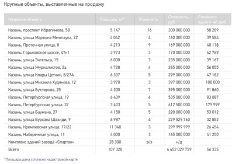
Спрос
Офисная недвижимость
В 2020 году также отмечается спрос на качественную офисную недвижимость среди IT компаний, консалтинговых агентств и банков, которые заполнили новые офисные центры класса А. Во время пандемии был спад деловой активности и многие компании расторгли договоры с арендодателями, но уже к концу года вакансия в
Торговые помещения
В торговой недвижимости снизился спрос на крупные площади, большинство гипермаркетов сократили планы развития, стали закрывать большие форматы и сокращать имеющиеся магазины. Но со стороны небольшого ритейла спрос остается высоким. Относительно ценовых ожиданий по аренде также снизились ставки запросов на торговую площадь, однако владельцы торговой недвижимости не планируют снижать ставку в условиях низкой вакансии рынка.
Складская недвижимость
В 2020 году складская недвижимость показала рост в сегменте собственных логистических центров, что связано с созданием вокруг Казани особых экономических зон для размещения объектов такого уровня. Что касается складов под аренду в Казани (в отличие от Москвы) рост спроса на данный сегмент не наблюдается. Это можно увидеть исходя из снижения стоимости на существующих объектах.
Тенденции рынка и прогнозы
2020 год был сложным для всех сегментов рынка коммерческой недвижимости. В период самоизоляции было закрыто большинство предприятий и ожидалось, что рынок к концу года покажет глубокий спад.
Офисная недвижимость во время пандемии показала себя достаточно устойчивым сегментом, но и ковидные ограничения, в отличие от торговой и гостиничной сферы, были не столь долгими и жесткими. Наиболее гибким собственникам
Торговая недвижимость была одной из наиболее пострадавших отраслей. В период пандемии, о получении дохода с арендаторов практически ни на одном объекте не шло и речи. Многие ТЦ работали на 10% от своей доходности, что означало 3,5 месяца убытков (именно этот фактор сыграл решающую роль в судьбе ТРЦ Сувар Плаза). Прогнозы в отношении оставшейся загрузки и потенциальной посещаемости после отмены ограничений, уже к концу действия закрытия ТРЦ не обещали ничего хорошего. Но, к счастью, они оказались не такими безнадёжными и отрасль уже к сентябрю набирала темпы и приближалась к показателям 2019 года. Однако, за 2020 год торговые центры все же потеряли доходность до 40%, что будет сказываться на их показателях ближайшие 3 года.
Складская недвижимость практически не почувствовала на себе влияние внешних факторов, хотя и не показала роста как в Москве, а наоборот, было отмечено снижение арендной ставки на 4%. Казань идет в развитии индустриальной недвижимости своим путем и стала одним из лидирующих городов России по количеству открытий собственных логистических центров. За 2020 год объем логистических парков, построенных под собственные нужды, составил 103 000 кв.м.
Прогнозы на 2021 год для гостиниц остаются неблагоприятными, так как на открытие границ и массовый туризм на следующий год никто не рассчитывает, но отельеры надеются на внутреннего туриста и мягкие ограничительные меры, которые позволят оставаться бизнесу хотя бы безубыточным. Предполагаемая средняя загрузка отелей на 2021 год по словам экспертов от 40–50%.
В конце этого непростого года хочется верить в прогнозы на восстановление экономики до 2022 года, где снова можно будет говорить о росте ставок аренды и вернувшемся интересе инвесторов к сегменту коммерческой недвижимости, являющейся одним из защищенных сегментов сохранения и доходности капитала.
Макроэкономические показатели, РФ
Инфляция
По прогнозам Минэкономразвития инфляция к концу 2020 года составит 4,6–4,8% (что выше базового прогноза на 0,8%). На рост повлияли такие проинфляционные факторы как: ослабление рубля, повышение затрат производителей на соблюдение мер безопасности (COVID -19) и снижение производительных мощностей, в связи с нехваткой рабочей силы во время ограничительных мер.
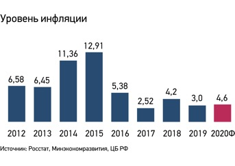
Умеренный рост уровня инфляции сохраняется и за счет сниженной покупательской способности, связанной с ростом безработицы (прогноз на конец 2020 года до 8%) и снижением реальных доходов населения.
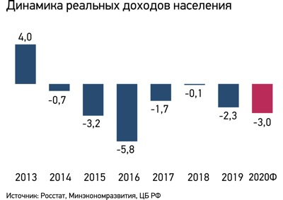
Ключевая ставка
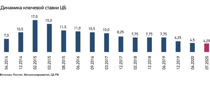
18 декабря 2020 года ключевая ставка была зафиксирована на отметке 4,25%, которая будет действовать до 12 февраля 2021 года.
Наибольшее значение для поддержания экономики в 2020 году сыграло снижение ставки на -2%. Данный фактор повлиял на возможность использования в экономике кредитных средств для более уверенного развития бизнеса.
Смягчение
Значительный рост показала жилая недвижимость как в количестве проданных квартир, так и в динамике роста их стоимости. Вслед за жилой недвижимостью увеличился спрос и на коммерческие объекты, которые показали динамику роста стоимости квадратного метра на 6,4%
Динамика ВВП % к предыдущему году —
Прогноз Минэкономразвития по уровню падения ВВП на 2020 год смягчен до уровня -3,8%. По оценкам Центробанка, пересмотр показателя в сторону улучшения, делается возможным благодаря незначительному снижению экспорта.
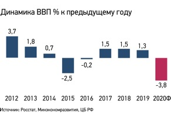
Прогноз восстановления динамики роста ВВП в 2021 году оценивается экспертами в диапазоне 2 — 2,8%, что должно привести по итогу к значениям в диапазоне -1%. Наибольшим вкладом в объем ВВП в 2021 году может оказаться строительная отрасль, на которую направлена значительная поддержка
Впервые после 2015 года падение ВВП было отмечено в 2020 году (-2,3%), а наибольшее снижение за 10 лет было определено в 2019 (-7,8%).
Динамика валютных курсов
По прогнозам экспертов, к концу 2020 года стоимость доллара может зафиксироваться на отметке в 75 руб. за единицу. За 2020 год рубль ослабел по отношению к доллару на 21,2%, а наибольшие скачки валюты пришлись на март 2020, когда было зафиксировано максимальное значение в 80,9 руб. за доллар. Влияние на ослабление национальной валюты оказали снижение мирового спроса на углеводороды в первом полугодии, в связи с локдауном экономик мира на фоне коронавирусной инфекции, а также выборами в США во второй половине года.
В 2021 году динамика стоимости углеводородов будет и дальше оказывать влияние на национальную валюту. Аналитики прогнозируют среднерыночную стоимость нефти марки Brent в 53 руб. за баррель, что не дает возможность прогнозировать снижение цен на валюту. По оценкам экспертов в 2021 курс доллара по отношению к рублю будет варьироваться в диапазоне от 77 — 80 руб. за доллар.
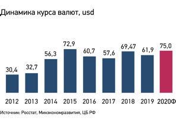
UD Group 2020 — Этот отчет является результатом исследования UD Group и носит обобщенный характер. Результаты отчета и, как следствие, использование результатов отчета не является основанием для привлечения к ответственности компании UD Group в отношении убытков третьих лиц. Публикация данных из отчета целиком или частично возможна только с упоминанием UD Group как источника данных.

Расскажите нам о своем проекте
Кратко опишите задачу: наш специалист свяжется с вами в ближайшее время, чтобы обсудить детали.